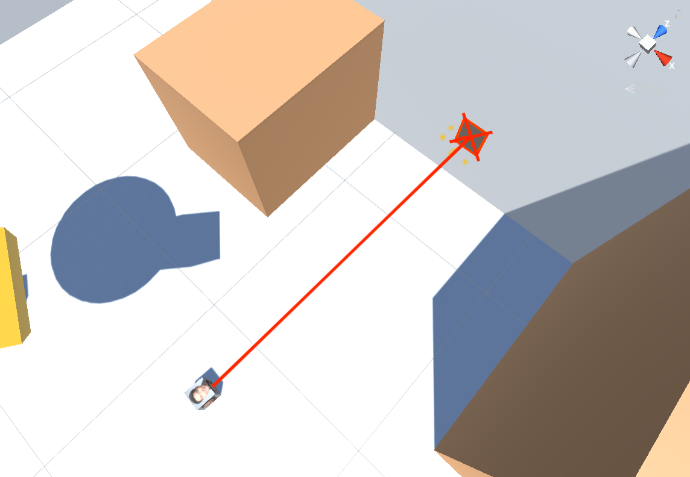
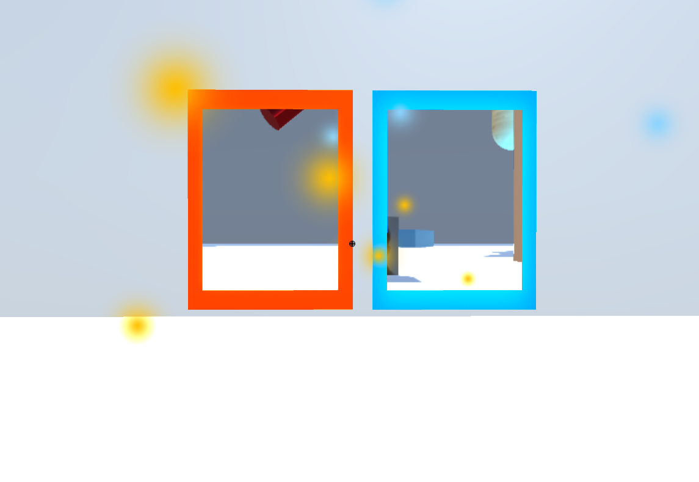
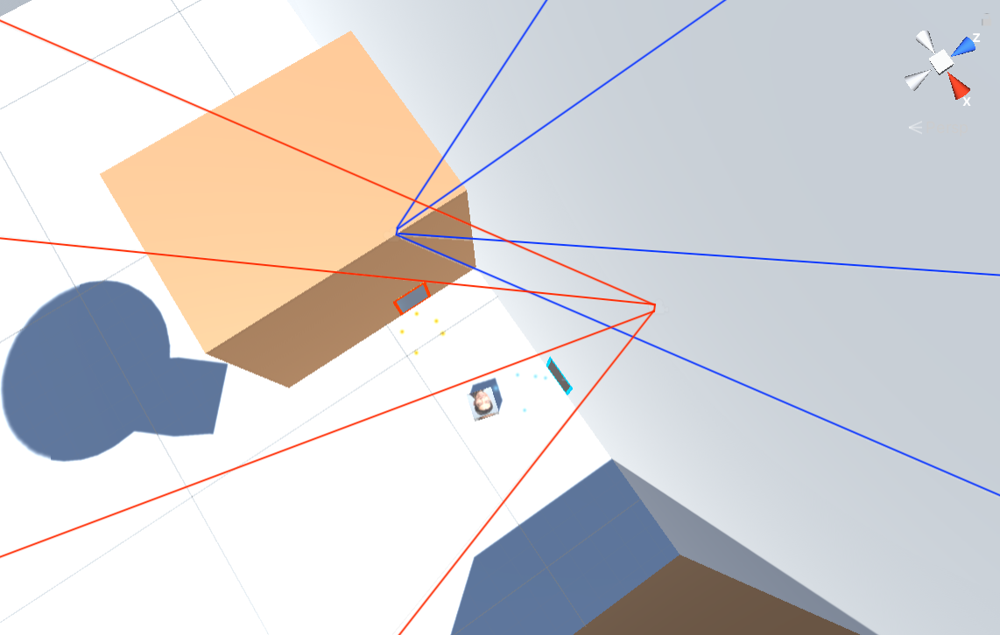

Team members
|
Table of Contents |
In our project, we decided to implement portals. A portal can have many different uses or definitions, but for this project, we took inspiration from the popular video game series developed by Valve, Portal and Portal 2. Here, portals are essentially an open doorway that transports you to a different location or environment. They also allow you to peer into the environment as seen by the other portal, without needing to actually enter it. Our overall goals for this project include experimenting with ray tracing and ray cast rendering for the 3D objects in the scene. We wanted to see how the portals would handle rendering these objects and how they would look. We also wanted to implement teleportation to experiment with manipulating the player's position. Furthermore, we wanted to make the portals more vibrant than just a simple projection of what is seen by the other portal. We also wanted to inject more life into the scene. Because of this, we implemented a couple of custom shaders and applied them to the portal and to 3D objects.
The portal placement is calculated by casting a ray from where the player clicks. We check for collisions from the ray to an object. If the ray collides with an object, then we place a portal down on the object with a slight offset, so that the portal does not get buried in the object.
If the portal placement is targeted on a portal, the portal will not be placed. However, our current implementation does allow portals to overlap if targeted right next to the portal, which may cause the portals looks to mix together.
The left mouse button spawns the orange portal, while the right mouse button spawns the blue portal. The portals are deactivated and hidden at the start, then activated at the first click of either. If a portal has already spawned in the scene, it will despawn from the original location and respawn to the new location.
For being able to see through the portals, we employ a couple of camera tricks. We have two cameras set up, one for each portal. Each of these cameras relays what they are viewing to its partner portal. We must update both camera's position in relation to the player's position. This works by flipping the portal camera's and positioning the camera to the inverse of the player's current position. We must then rotate the camera afterwards. This allows us to maintain a nice view in each portal that does not look disjointed.
The math for one portal's camera can be summarized using the following matrix multiplication formula: $$ C_{portalCam} = P_{out} T_{yaxis\_180\_flip} P_{in}^{-1} C_{player} $$ where:
When the player enters the portal, it should teleport them to the other portal. Our implementation uses a collider to detect when the player touches the portal and then teleports the player to the other portal, while keeping the orientation of the player.
When teleporting the player through the portal, two things are calculated: position and rotation.
For position, we take the player's coordinates in terms of the entry portal and transform that to the destination portal with a small forward offset applied.
The math for calculating the player's teleported position can be summarized using the following matrix multiplication formula: $$ O_{position\_inportal} = P_{in}^{-1} O_{prev} $$ $$ smallFwdOffset = {teleportOffset} * {outPortal\_forward\_vector} $$ $$ O_{new} = P_{out} O_{position\_inportal} + smallFwdOffset $$ where:
We create recursive portals by rendering a subportal by
The equation we used for the Blinn-Phong shader: $$L = (k_a * I_a) + (k_d * (I /r^2) * max(0, n * l)) + (k_s * (I/r^2) * max(0, n * h) ^ p)$$
For the shaders, we apply what we learned in project 4 to create a Blinn-Phong Unlit Shader. We have also created a surface shader that wraps objects in light. We first calculate a Fresnel coefficient by taking the dot product of the view direction and the normal of the object's vertex. ka, kd, and ks are the ambiance, diffuse, and spectural coefficients respectively. I/r^2 is the irradiance from the light source to the vertex we are sampling. n is the normal of the point and l is the magnitude of the light source to the vertex.
The formula used to determine the Fresnel term is: $$R = max(0, min(1, bias + scale * (1.0 + I \cdot N) * power))$$
We then raise it to a power that is tuned manually. We linearly interpolate the texture and emission color using this coefficient and set our object's emission equal to that. This works well for spherical/cylindrical objects with smooth, round edges, but not as well for shapes such as planes or cubes. You can see the result of this work applied to the capsule of the scene.
We implemented a second emissive shader that gives each of the portals a glowing orange or blue rim that becomes lighter towards the center of the portal. We find the distance between the center of the object and each vertex, and use this distance to interpolate between different emitted colors. This shader works well for flat-faced objects like planes and cubes.
One problem we encountered when implementing the glowing fresnel shader was that we wanted to apply a similar appearance to the portals, but the effect carried over poorly from the capsule to the flat portal plane. The fresnel shader was effective on round capsules because the glowing effect becomes more pronounced as the surface gradually curves away from the viewer. However, because portals are flat and generally face the player directly, the fresnel shader had little effect on the appearance of the portals. To resolve this, we implemented a second shader for portals that uses UV coordinates to detect proximity to an edge and adjust emitted color accordingly.
Another problem overall was the lack of resources on how to write unity shaders. Many of the online examples of shaders we wanted to implement or tried to gain inspiration from were done using the built in shader lab in unity. They didn't provide any equations that they used to base their shader off of. Since we wanted to code up the shader to practice what we learned in project 4, it made things difficult. Even in tutorials that had well defined equations, such as the Blinn-Phong shader, we struggled due to lack of documentation. We weren't sure what parameters were needed and what types they were, which made the simple Blinn Phong shader a lot harder to implement. We did get help from Mark Zhang for shaders, bless his soul and sorry Mark for all the questions, but all the other issues we ran into caused us to only be able to implement three shaders in total. It's a bit disappointing we couldn't implement more, but regardless we are still happy and proud with what we accomplished.
Our final interactive portals demo is linked below. We have implemented an interactive, real-time 3D portal simulation in Unity, where the first-person player can move around the scene using WASD keys and place portals on surfaces by left or right clicking. The player can teleport between portals by walking through them. Recursive portal images can be seen when they are placed facing each other.
We also implemented a variety of shaders to enhance the appearance of the scene. For round objects like capsules and spheres, we created a glowing fresnel shader that takes in the surface normal and the view direction, and increases brightness closer to the outer edges of the object. The result is a glowing appearance, regardless of the angle the object is viewed from.
For the orange and blue edges of the portals, we implemented a shader that gradually shifts the emitted color as it approaches the edge of the portal face.
Interactive demoWASD to move, left/right click to place portals. If the cursor is off-center or behaving abnormally, press Esc and then click within the Unity player to realign the cursor with the mouse. Chrome is recommended.
Final video Portal particles Teleportation Glowing Fresnel shader Additional demo
Oscar worked on recursive portals and Additional contributions were made to each of the deliverables such as the proposal, milestone status report, final presentation, and final report webpage.
Raymond worked on implementing portal placement, portal teleportation, and updating the portal views. Additional contributions were made to each of the deliverables such as the proposal, milestone status report, final presentation, and final report webpage.
Daniel worked on movement with Ashley, implementing shaders, and despawning portals out of view/respawning them when in view again as an optimization. Additional contributions were made to each of the deliverables such as the proposal, milestone status report, final presentation, and final report webpage.
Ashley worked on implementing player and camera movement, implementing shaders with Daniel, constructing the demo Unity scene, and recording and editing all videos. Additional contributions were made to each of the deliverables such as the proposal, milestone status report, final presentation, and final report webpage.